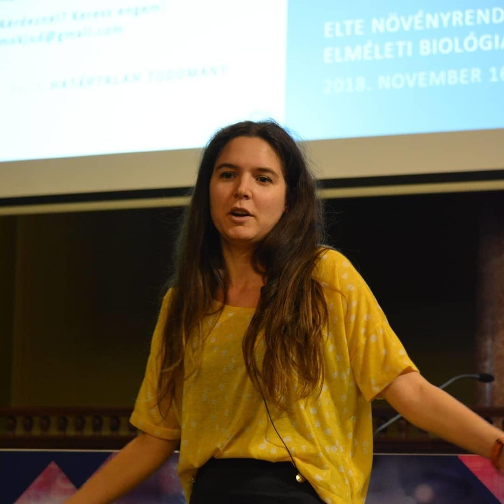

Kik vagyunk
 Dr. Boza Gergely
Dr. Boza Gergely
tudományos munkatárs, Ökológiai Kutatóközpont, Evolúciótudományi Intézet
Tudományos érdeklődésem a komputációs biológia, a szociális kapcsolatok kialakulása és stabilitása, az evolúciós játékelmélet és az evolúciós ökológia köré szerveződik. (Tudományos tevékenységem itt nyomon követhető.) 2006-tól a Kölcsey Ferenc Gimnáziumban tanítottam biológiát két éven át, illetve az ELTE-n oktattam Biostatisztikát, Integratív biológiát és Evolúcióbiológiát. 2012 óta részt veszek a Kutatók Éjszakáján az "Evolúció éjszakája" című interaktív programsorozat szervezésében.
 Hubai András
Hubai András
tudományos segédmunkatárs, Ökológiai Kutatóközpont, Evolúciótudományi Intézet
Számítógépes biológiával foglalkozom, biológiai mechanizmusok rendszerszintű és evolúciós hatását kutatva egyszerű modellekben. Fő érdeklődési területeim az élet kialakulása (abiogenezis), az információ generációkon belüli (horizontális) terjedése, és a növények térbeli szerveződése (vö. klonalitás). Tudományos cikkeim itt fellelhetőek. 2014 óta oktatok az ELTE-n biostatisztikát és programozást. Fontosnak tartom a tehetség gondozását és a tudomány népszerűsítését: hallgatói vezetőként segítettem Biológus Tudományos Diákköri (TDK) Konferenciák és Biológus Tavaszi Iskolák szervezését, valamint az első Élettudományi Liftbeszéd Fesztiválok szervezésével hozzájárultam a tudományos témájú liftbeszéd (elevator pitch) műfajának meghonosításához. A Kutatók Éjszakáján kollégáimmal evolúció és ökológia témájú interaktív programokkal várjuk a laikus érdeklődőket, ez az "Evolúció Éjszakája".

Mokos Judit
tudományos segédmunkatárs, MTA-ELTE
Doktorandusz hallgatóként főként az emberi együttműködés evolúciós hátterére koncentrálok. Az ELTE-n éveken át oktattam biostatisztikát, valamint tartottam "data science" workshopokat. Hét évig dolgoztam egy családsegítő szolgálatnál, ahol speciális igényű gyerekekkel foglalkoztam. 2014 óta veszek részt a Kutatók Éjszakáján megrendezett "Evolúció Éjszakája" program szervezésében. 2018-ban bejutottam a FameLab tudománykommunikáció verseny magyarországi döntőjébe. 2016-ban megnyertem az Élettudományi Liftbeszéd Fesztivál PhD-szekcióját.
 Dr. Müller Viktor
Dr. Müller Viktor
tudományos munkatárs, ELTE TTK Növényrendszertani, Ökológiai és Elméleti Biológiai Tanszék
Fertőző és nem fertőző betegségek modellezésével, adatelemzésével és evolúciós elméletével foglalkozom (bővebben lásd itt ), emellett az ELTE-n a Biológus Tudományos Diákkör és az Élő adás ismeretterjesztő előadássorozat főszervezője vagyok.
 Dr. Scheuring István
Dr. Scheuring István
tudományos tanácsadó, Ökológiai Kutatóközpont, Evolúciótudományi Intézet
Tudományos érdeklődési körömbe tartozik az evolúciós játékelmélet, az evolúciós ökológia, az emberi együttműködés evolúciós háttere. (Tudományos tevékenységem itt nyomon követhető.) Több mint 30 éve oktatok az ELTE-n. Jelenleg a biológia mesteraszakos hallgatóknak oktatok különböző evolúcióbiológiai és ökológiai tárgyakat. Évek óta tartok interaktív foglalkozásokat és előadásokat a Kutatók Éjszakája program keretében. Közel 30 ismeretterjesztő cikket írtam magyar nyelven különböző ismeretterjesztő folyóiratokba. 2015 óta a Bátor Tábor természettudományos programjának vagyok a szakértője.
 Dr. Vásárhelyi Zsóka
Dr. Vásárhelyi Zsóka
tudományos munkatárs, Ökológiai Kutatóközpont, Evolúciótudományi Intézet
Tudományos érdeklődésem központjában a munkamegosztás evolúciója áll az embernél és más állatoknál (tudományos tevékenységem itt nyomon követhető.) Az ELTE TTK-n oktattam Biostatisztikát, illetve tartottam az ember evolúciójával kapcsolatos szemináriumokat. 2012 óta rendezünk interaktív foglalkozásokat és kerekasztal-beszélgetéseket a Kutatók Éjszakája program keretében. Éveken át szerveztem az Élettudományi Liftbeszéd Fesztiválokat az ELTE-n. Szabadidőmben éveken át foglalkoztam hiperaktív és figyelemzavaros gyerekekkel.